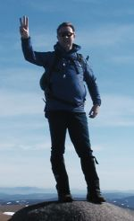

| Jim's Site | |

Last Updated: Tue Apr 30 08:48:09 BST 2013
 |
| Jim on the summit of Ben Avon, Cairngorms - 310 down, 3 to go. Photo: Duncan Gough |
This page documents the "plan of attack" that I made in July 2003 to complete the Munros by my 40th birthday in May 2007. At the time I made the plan I had around 65 peaks left to bag, and I organised them into 41 days on the hills. I reckoned if I got going, and the weather was with me I would be able to achive my target.
As it turned out, the weather was with me (mostly) and, with the help of several friends, I was able to knock off the remaining Munros pretty much to plan, and I finished my round on 19th May 2007, the Saturday before my 40th birthday.
Shortly after I completed my round Foinaven was resurveyed to see if it should be promoted to Munro status. Although a fine looking mountain, I did not have time to make an ascent on my Munro bagging trip to the Far Far North in 2002. But on 8th June 2007 the result of survey was announced and the height of Foinaven was measured as 911.046 metres (2989 feet), so three weeks after my completion I have still climbed all the Munros.
On 25th August 2007 Beinn Dearg [Torridon] was also resurveyed to see if it should be promoted to Munro status. It was announced on 7th September 2007 that Beinn Dearg was measured as 913.675 metres (2998 ft), so it isn't a Munro either. I made an ascent of Beinn Dearg in May 1999.
In 2009 Sgurr nan Ceannaichean [Glen Carron] was surveyed as 913.43m (2997ft), and so removed from the list of Munros. I made an ascent of this peak in 1999 and celebrated it's ascent as my 200th Munro.
In 2011 Beinn a'Chlaidheimh [Fisherfield] was surveyed as 913.96m (2999ft), and so has been removed from the list of Munros. I made an ascent of this peak in 2006.
Overall Summary: finished.
See also my Walking & Climbing Trips page.
Southern15th - 19th May 2007 3 mountains / 2 days
|
Knoydart / Fannichs / Cairngorms30th March - 4th April 2007 7 mountains / 6 days
|
Tyndrum / Glencoe / Skye6th - 9th June 2006 14 mountains / 4 days
|
Cairngorms2nd - 6th April 2006 8 mountains / 5 days
|
Fisherfield / Torridon / Cairngorms19th - 24th February 2006 8 mountains / 5 days
|
Lochaber / Knoydart21st - 24th October 2004 7 mountains / 4 days
|
Skye15th - 22nd May 2004 4 mountains / 3 days
|
Glen Tilt25th - 26th October 2003 2 mountains / 2 days
|
Killin21st - 26th September 2003 6 mountains / 5 days
|
Strathcarron20th - 23rd July 2003 5 mountains / 4 days
|
All information on this site is copyright © 1994-2026 Jim Randell